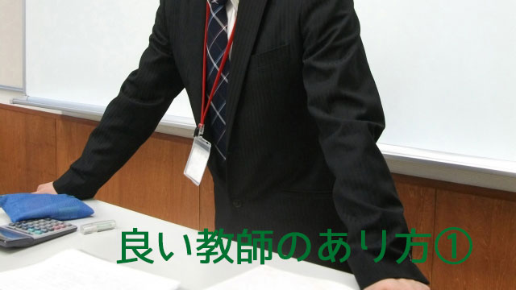

仕事柄「良い教師」とは何かを考えることが多い。
一生懸命生徒に勉強を教えることでは当り前すぎるので、恐らく「やる気を引き出す」とか「向上心のある人間に育てる」「人や社会に貢献する人物の育成」というフレーズが浮かびます。
先生の役割が「人を教え育てる」ことにあるなら単に勉強を教えるのでは済まないということです。先生という職業には人間そのものを成長させることが期待されているわけです。
しかしここで疑問が生じます。
そもそも先生は、授業技術を教わることはあっても「人間そのものを育てる」技法を教わってないからです。
大学で青年心理とか教育原理という授業はあるものの、あくまで概論的な講義を受けただけであって正直に言えば、教職課程の一貫として「授業を聴いた」だけでしょう。
もちろん個人的に興味をもってその種の勉強を掘り下げた人もいるでしょうが、それとて「良き教師」になるためのテクニカルな教育にはなり得ないと思います。
つまり「人を育てる」技術を身につける機会はないということです。
そして多くの教師は大学を出てすぐに教職につくので、いわゆる「実社会経験」というものを持たないまま「先生」になるわけです。
一般企業に勤める人も経験がないという点では同じでも、先生にはスタートラインで一つのハンディがあります。
それは、他の職業に就く新人たちは「半人前」として徹底的に鍛えられるのに対し新米教師は教壇に立った瞬間からベテラン教師と同じように「先生」として振るまうことができる（求められる）点です。
極端な言い方をすれば、大学出たての新米教師でも生徒に「人の道」を説くことができる、できてしまうということです。
最初の数年間は、叱られたり怒鳴られたり恥をかいたりしながら身体で仕事を覚えていかざるを得ない民間企業に比べたら、これは途方もない特権的あり方だといえます。
ゆえに社会人として揉まれていない、人間関係の調整という点でも引き出しの少ないまま人を教え導くことを求められる。
つまりそれだけ教師はハンディを背負っているということです。
優秀な教師が増えている
これはつまり教師には2つのハンディがあるということ。
1つは「人間を育てる」技法をもっていない点。
2つめは「社会人として未成熟なまま」でいられることです。
そしてこのことは世間一般にも広く流布している「人間として未熟な先生」のイメージにつながっているのだと思います。
しかし最近この傾向に変化があらわれています。若い先生を中心に優秀な人が増えている。露骨な言い方をすれば、明らかに先生の「質」が昔より向上しているのです。
理由はカンタン。教員志望者が増えそれに伴い教員試験の難易度が上がっているからです。難易度が上がればそれだけ優秀な人材も確保できるのは当然といえば当然です。
ではどうして教師を目指す人が増えたかというと表面的にはしばらく続いた不景気やブラック企業の問題など若者が民間企業より、将来の安定や真のやりがいを求め始めた結果です。
かつてー高度成長期から９０年代くらいまでーは優秀な人材は待遇の良い民間企業へ殺到し、教育界に行くのは上記企業に行く力のない層ーハッキリ言えば競争から脱落した者ーが多数を占めていました。
当時大学生が就職活動して大手企業や中央官庁に入れそうにないと「先生にでもなろうか」「先生にしかなれそうもない」などとつぶやき、だからそうして教師になった者を「でも・しか先生」と呼ぶ風潮があったくらいです。
でも今は違う。２０代から３０代あるいは４０代にかけて明らかに優秀な教師が増えている。私も学校などへ出かける機会が多いのでそのことは実感しています。
また塾などでアルバイトをする大学生を見ていても、かつてなら教師など見向きもしなかった「優秀な講師」が最初から教員を目指すことも珍しいことではなくなっています。
このように教師のレベルが高くなっている背景には先にあげた「安定志向」や「やりがい」を求める他に、もう一つ注目したい隠れた理由がある気がします。
それはあくまで私の個人的見解ですが、教育というものが放つ本来の魅力ではないかと思います。それが若い人たちを引き寄せている。
では本来の魅力とは何か。それは教育が人間を相手にする営みだからではないか。人間である教師が人間である生徒を自らの手で育てていく。そこにはモノ（物質や商品）の交換（売買）では得られない純粋な手応えを感じられるからではないのか。
かつてのように物質的豊かさばかりを追求する時代から、心や精神の豊かさを求める段階へ移りつつある。それは人々の関心がモノから人間のあり方そのものへとシフトしていることを意味する。
このような時代の変化が若い人たちの無意識に反映され、結果として物質的利益を追求する企業より人間を相手にする教育を選んでいるのではないかというのが私の考えなのです。
もし私の推測が正しいなら、今後も優秀な若者が教師を目指す傾向は続くでしょう。
それは喜ばしいことです。
何といっても資質ある若者の絶えざる参入こそが教育界全体のレベルアップと活性化の基だからです。
ただ、問題は教師になってからの教育技術の向上と維持をどう図るかということですが、これについては次回またお話します。